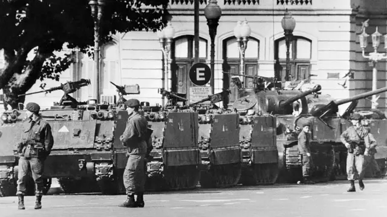
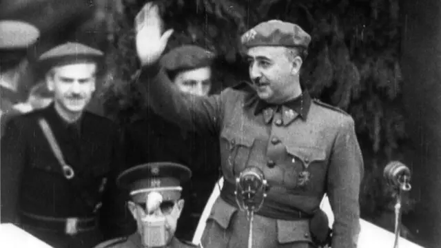
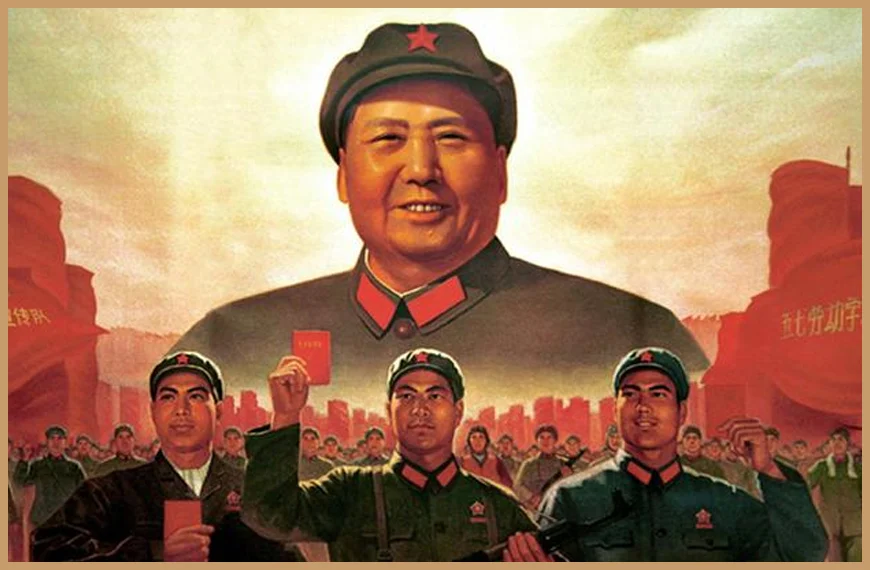

ระบบการปกครองแบบเผด็จการ ระบอบเผด็จการมีลักษณะเด่นอยู่ที่การรวมอ านาจทางการเมืองการ
ปกครองไว้ที่บุคคลเพียงคนเดียวหรือพรรคเดียว โดยบุคคลหรือคณะบุคคลดังกล่าวสามารถใช้อ านาจนั้น
ควบคุม บังคับประชาชนได้โดยเด็ดขาด หากประชาชนคนใดคัดค้านผู้น าหรือคณะผู้น าก็จะถูกลงโทษ
รูปแบบของระบบเผด็จการ มี 3 แบบ คือ

1. ระบอบเผด็จการทหาร
หมายถึง ระบอบเผด็จการที่คณะผู้นำฝ่ายทหารเป็นผู้ใช้อำนาจเผด็จการในการปกครองโดยตรงหรือโดยอ้อม
(ผ่านทางพลเรือนที่พวกตนสนับสนุน)
และมักจะใช้กฎอัยการศึกหรือรัฐธรรมนูญที่คณะของตนสร้างขึ้นเป็นเครื่องมือในการปกครอง
โดยทั่วไปคณะผู้นำทหารมักจะใช้อำนาจเผด็จการปกครองประเทศเป็นการชั่วคราว
ระหว่างที่ประเทศอยู่ในภาวะสงครามหรือหลังจากล้มเลิกระบอบประชาธิปไตย
โดยมีเป้าหมายเพื่อขจัดภัยคุกคามบางอย่างต่อความมั่นคงของรัฐ ส่วนมากแล้วเมื่อเหตุการณ์ความวุ่นวายต่าง ๆ สงบลง
คณะผู้นำทางทหารก็มักจะอ้างสาเหตุต่าง ๆ นานาเพื่อยึดอำนาจการปกครองประเทศต่อไปอีก
ไม่ยอมที่จะคืนอำนาจกลับมาให้ประชาชนโดยง่าย ดังเหตุการณ์ที่เกิดขึ้นในสหภาพพม่าในปัจจุบันนี้เป็นต้น
แต่ทว่าเมื่อเวลายิ่งผ่านเนิ่นนานออกไปกระแสความไม่พอใจในหมู่ประชาชนรวมทั้งแรงกดดันจากนานาชาติ
ก็จะทำให้คณะผู้นำทางทหารกุมอำนาจการปกครองไว้ไม่ได้ ในที่สุดก็จำเป็นต้องคืนอำนาจให้ประชาน แต่กว่าจะมาถึงจุดนี้ได้
ในบางประเทศก็เกิดความวุ่นวาย มีการต่อสู้ระหว่างกำลังของประชาชนกับกำลังของรัฐบาลเผด็จการทหาร
ซึ่งจากประวัติศาสตร์การเรียกร้องสิทธิเสรีภาพในการปกครองที่ผ่านมา มักจะจบลงโดยชัยชนะเป็นของฝ่ายประชาชน
เช่นเหตุการณ์ซึ่งเกิดขึ้นที่โรมาเนีย ฟิลิปปินส์ เป็นต้น ตัวอย่างของการปกครองแบบเผด็จการทหาร เช่น
การปกครองของญี่ปุ่นระหว่างสงครามโลกครั้งที่ 2 อันเป็นระยะที่พลเอกโตโจและคณะนายทหารใช้อำนาจเผด็จการในการปกครอง
หรือการปกครองของไทยระหว่างที่ไม่มีรัฐธรรมนูญ ในระหว่างวันที่ 20ตุลาคม 2501 ถึงวันที่ 20 มิถุนายน 2511
อำนาจการปกครองประเทศตกอยู่ภายใต้การควบคุมของคณะปฏิวัติ ซึ่งนำโดย จอมพลสฤษดิ์ ธนะรัชต์ และจอมพลถนอม กิตติขจร
ส่วนในปัจจุบัน(พ.ศ. 2541) ก็มี เช่น การปกครองของสหภาพพม่าภายใต้การนำของพลเอกตาน ส่วย เป็นต้น

2. ระบอบเผด็จการฟาสซิสต์
หมายถึง ระบอบเผด็จการที่ผู้นำคนหนึ่ง
ซึ่งได้รับการสนับสนุนจากกลุ่มนักธุรกิจและกองทัพให้ใช้อำนาจเผด็จการปกครองประเทศ
ผู้นำในระบอบการปกครองเผด็จการฟาสซิสต์มักจะมีลัทธิการเมืองที่เรียกกันว่า ลัทธิฟาสซิสต์ เป็นลัทธิชี้นำในการปกครอง
และมุ่งที่จะใช้อำนาจเผด็จการปกครองประเทศเป็นการถาวร โดยเชื่อว่าระบอบการปกครองแบบนี้เหมาะสมกับประเทศของตน
และจะช่วยให้ประเทศของตนมีความเจริญก้าวหน้าโดยเร็ว ตัวอย่างของการปกครองระบอบเผด็จการฟาสซิสต์ เช่น
การปกครองของอิตาลีสมัยมุสโสลินีเป็นผู้นำ ระหว่าง พ.ศ. 2473 – 2486 การปกครองของเยอรมนีสมัยฮิตเลอร์เป็นผู้นำ
ระหว่าง พ.ศ. 2476 – 2488 หรือการปกครองของสเปนสมัยจอมพลฟรังโกเป็นผู้นำระหว่าง พ.ศ. 2480 – 2518 เป็นต้น

3. ระบอบเผด็จการคอมมิวนิสต์
หมายถึง ระบอบเผด็จการที่พรรคคอมมิวนิสต์เพียงพรรคเดียวได้รับการยอมรับ
หรือสนับสนุนจากกลุ่มบุคคลต่าง ๆ และกองทัพให้เป็นผู้ใช้อำนาจเผด็จการปกครองประเทศ
คณะผู้นำของพรรคคอมมิวนิสต์เชื่อว่า ระบอบเผด็จการคอมมิวนิสต์เป็นรูปแบบการปกครองที่เหมาะสมกับประเทศของตน
และจะช่วยทำให้ชนชั้นกรรมาชีพ เป็นอิสระจากการถูกกดขี่โดยชนชั้นนายทุน รวมทั้งทำให้ประเทศมีความเจริญก้าวหน้า
และเข้มแข็งทัดเทียมกับต่างประเทศได้เร็วกว่าระบอบการปกครองแบบอื่น ระบอบเผด็จการคอมมิวนิสต์มีความแตกต่าง
จากระบอบเผด็จการทหารอยู่ข้อหนึ่งที่สำคัญ คือ ระบอบเผด็จการทหารจะควบคุมเฉพาะกิจกรรมทางการเมืองของประชาชนเท่านั้น
แต่ระบอบเผด็จการคอมมิวนิสต์จะใช้อำนาจเผด็จการควบคุมกิจกรรมละการดำเนินชีวิตของประชาชนในทุกด้าน
ไม่ว่าจะเป็นด้านการเมือง การปกครอง ด้านเศรษฐกิจ และด้านสังคม
หลักการของระบอบเผด็จการ
1. ผู้นำคนเดียวหรือคณะผู้นำของกองทัพหรือของพรรคการเมืองเพียงกลุ่มเดียว มีอำนาจสูงสุดในการปกครอง
และสามารถใช้อำนาจนั้นได้อย่างเต็มที่โดยไม่ต้องฟังเสียงคนส่วนใหญ่ในประเทศ
ไม่ต้องการให้ประชาชนมีส่วนร่วมในการปกครองประเทศ ถือเอาเจตนารมณ์ หรือความต้องการของผู้ปกครองเป็นหลัก
2. การรักษาความมั่นคงของผู้นำหรือคณะผู้นำมีความสำคัญมากกว่าการคุ้มครองสิทธิเสรีภาพของประชาชน
ประชาชนไม่สามารถที่จะวิพากษ์วิจารณ์การกระทำของผู้นำอย่างเปิดเผยได้ เป็นการกำจัดสิทธิเสรีภาพต่าง ๆ
ของประชาชนไม่ยอมรับความเสมอภาคของประชาชน ประชาชนต้องปฏิบัติตามผู้นำอย่างเคร่งครัด
ยกย่องอำนาจรัฐเหนือเสรีภาพประชาชน
3. ผู้นำหรือคณะผู้นำสามารถอยู่ในอำนาจได้ตลอดชีวิตหรือนานเท่าที่กลุ่มผู้ร่วมงานหรือกองทัพยังให้การสนับสนุน
ประชาชนทั่วไปไม่มีสิทธิที่จะเปลี่ยนผู้นำได้โดยวิธีทางรัฐธรรมนูญ
4.รัฐธรรมนูญและการเลือกตั้งสมาชิกสภาผู้แทนราษฎรที่จัดขึ้นตามรัฐธรรมนูญและรัฐสภาไม่มีความสำคัญต่อกระบวนการทางการปกครองเหมือนในระบอบประชาธิปไตย
กล่าวคือ รัฐธรรมนูญเป็นแค่เพียงรากฐานรองรับอำนาจผู้นำเท่านั้น ส่วนการเลือกตั้งสมาชิกสภาผู้แทน ฯ
ที่จัดขึ้นก็เพื่อให้ประชาชนออกเสียงเลือกตั้งผู้สมัครที่ผู้นำใช้หลักการรวมอำนาจไว้ที่ส่วนกลางของประเทศหรือกลุ่มผู้นำยึดถือหลักความมั่นคงของชาติสำคัญที่สุด